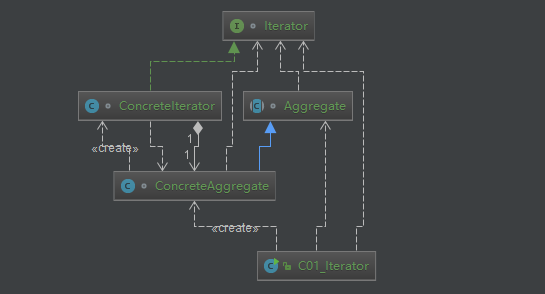

原文出处:本文由博客园博主知了一笑提供。
原文连接:https://www.cnblogs.com/cicada-smile/p/11570299.html
原文连接:https://www.cnblogs.com/cicada-smile/p/11570299.html
本文源码：GitHub·点这里 || GitEE·点这里
一、迭代器模式
1、基础概念
迭代器模式又叫游标模式，是对象的行为模式。迭代器模式可以顺序地访问一个聚集中的元素而不必暴露聚集的内部表象。
2、模式图解

3、核心角色
- Iterator：迭代器角色
此抽象角色定义出遍历元素所需的接口。
- ConcreteIterator：具体迭代器角色
此角色实现了Iterator接口，并保持迭代过程中的游标位置。
- Aggregate：聚集角色
此抽象角色给出创建迭代器(Iterator)对象的接口。
- ConcreteAggregate：具体聚集角色
聚合持有对象集合，提供返回迭代器的方法，可以正确遍历该集合。
- Client：客户端角色
持有对聚集及其迭代器对象的引用，调用迭代器对象的迭代接口。
4、源码案例
public class C02_Iterator {
public static void main(String[] args) {
Object[] objArray = {"one","two","three","four","five"};
Aggregate aggregate = new ConcreteAggregate(objArray);
Iterator iterator = aggregate.createIterator();
while (!iterator.isEnd()){
System.out.println(iterator.currentItem());
iterator.next();
}
}
}
interface Iterator {
void first();
void next();
boolean isEnd();
Object currentItem();
}
class ConcreteIterator implements Iterator{
//持有被迭代的聚合对象
private ConcreteAggregate agg;
//记录当前迭代索引位置
private int index = 0;
//设置当前聚集对象的大小
private int size = 0;
public ConcreteIterator (ConcreteAggregate agg){
this.agg = agg;
this.size = agg.getSize();
index = 0;
}
@Override
public void first() {
index = 0;
}
@Override
public void next() {
if (index<size){
index++;
}
}
@Override
public boolean isEnd() {
return (index>=size);
}
@Override
public Object currentItem() {
return agg.getElement(index);
}
}
abstract class Aggregate {
// 创建相应迭代器对象的接口
public abstract Iterator createIterator();
}
class ConcreteAggregate extends Aggregate{
private Object[] objArray = null;
public ConcreteAggregate (Object[] objArray){
this.objArray = objArray;
}
@Override
public Iterator createIterator() {
return new ConcreteIterator(this);
}
public Object getElement (int index){
if (index<objArray.length){
return objArray[index];
} else {
return null;
}
}
public int getSize (){
return objArray.length;
}
}二、JDK集合应用
1、简单案例
public class C02_ArrayList {
public static void main(String[] args) {
List<String> stringList = new ArrayList<>() ;
stringList.add("One") ;
stringList.add("Two") ;
stringList.add("Three") ;
java.util.Iterator<String> itr = stringList.iterator() ;
while (itr.hasNext()){
System.out.println(itr.next());
}
}
}2、Iterator源码
规定了集合迭代的一些方法。
public interface Iterator<E> {
boolean hasNext();
E next();
default void remove() {
throw new UnsupportedOperationException("remove");
}
default void forEachRemaining(Consumer<? super E> action) {
Objects.requireNonNull(action);
while (hasNext())
action.accept(next());
}
}3、ArrayList源码
- 实现聚合接口List
ArrayList<E> extends AbstractList<E> implements List<E>- 内部迭代器接口实现
private class Itr implements Iterator<E> {
int cursor;
int lastRet = -1;
int expectedModCount = modCount;
Itr() {}
public boolean hasNext() {}
public E next() {}
public void remove() {}
public void forEachRemaining(Consumer<? super E> consumer) {}
final void checkForComodification() {}
}- 返回迭代器
public Iterator<E> iterator() {
return new Itr();
}三、迭代器总结
1、适用场景
迭代器模式是与集合绑定，只要使用集合，就需要同时这个集合的迭代器，以此遍历集合中的数据，java中的容器对象Collection，List、Set、Map都有自己的迭代器。容器对象在编程语言中十分核心，所以在实现容器的时候基本都有匹配的迭代器，可以满足开发的需要，所以迭代器的自定义实践场景比较少。
2、优点总结
简化集合遍历方式，每一个聚集对象都可以有一个或多个迭代器对象，每一个迭代器的迭代状态可以是彼此独立的。遍历算法被封装在迭代器角色里面，因此迭代的算法可以独立于聚集角色变化。
四、源代码地址
GitHub·地址
https://github.com/cicadasmile/model-arithmetic-parent
GitEE·地址
https://gitee.com/cicadasmile/model-arithmetic-parent：迭代器模式1.png)